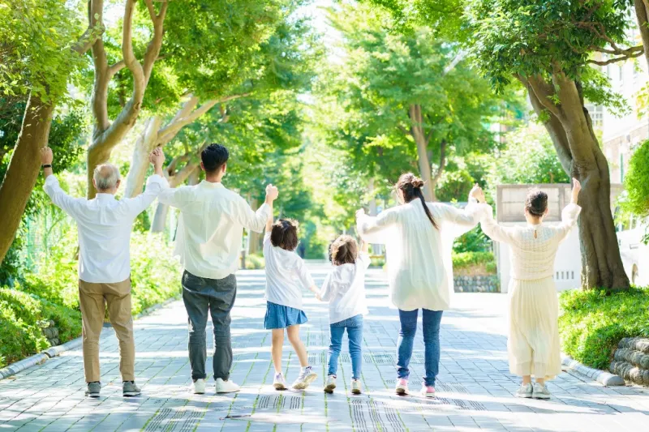
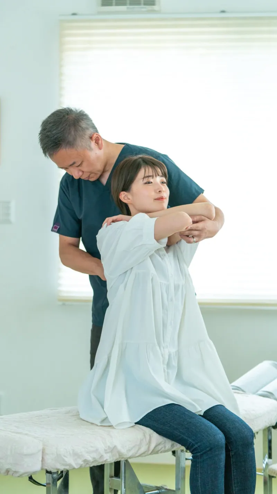

★★★★★
「1年治らなかった足の裏も、改善されなかった腰にもアプローチしてくださり、姿勢や体感がとても変わりました。」
HEALTH SALON
あなたの頑張る毎日を支え、
身体と心を癒す大切な場所として
施術、教育、販売を中心に、
健康で思い通りに生きる力を
二人三脚で支え育てるお店です。
健康なうちから身体を整え、未来の自分を守る。
痛みが出てから通うのではなく、健康でやりたい
ことを続けるためのメンテナンスを。
医療やあふれる情報に依存せず、本当に必要な選択ができるように。
自立した健康管理ができる人を増やします。

正しい健康知識を発信し、お互いに高め合える
コミュニティを。
施術、教育、販売で仲間を増やします。
こんな悩みありませんか？
施術、教育、販売で循環をつくり、
一生涯の健康をサポートする
痛みの改善だけでなく、健康な体を継続するための
「維持・メンテナンス」を重視。
カイロプラクティック・波動で身体を整えます。
患者さんと共に「健康を自分で守れる場所」を目指す。
正しい知識を学び、自分で体を守れる人を育てます。
施術で身体を整え、教育で知識を得たうえで、
「健康を維持する」ためのサポート商品。
口にする物を中心に健康維持の習慣をサポート
します。
病院や治療院に通う依存的な
治療ではなく、
「健康なうちから身体を整える」
施術、教育、販売で、21世紀に必要な予防目的の健康維持サイクルを作り上げます。
"痛みを取り除く"だけではなく、本当の意味で"治す"を目的としています。
痛みの改善だけでなく、健康な体を継続するための
「維持・メンテナンス」を重視します。
当店はカイロプラクティックがメインですが、ご希望の方には波動による施術もご案内可能です。

体をコントロールしている神経系を整え、体の働きを正常化します。神経系を整えることで、脳からの信号が筋肉、内臓に正しく伝わり正常に身体が働きます。年齢を重ねても子供の頃のように信号がスムーズに流れるような身体作りをし、健康を維持していきましょう。
カイロプラクティックの本場アメリカでは30％以上のお客様が予防目的で来店しています。症状が出てからでは元に戻しにくいことが、アメリカでは認知され始めています。
詳細は国際基準カイロプラクティックの団体HPを参照ください。
波動は身体の未来予報と言われています。体の臓器・細胞の周波数を乱している原因を特定し、生活での改善点を提案します。現在繰り返している生活習慣が導く未来を周波数から予想すること、また、乱れた周波数を元に戻すきっかけを与えてくれることにより、身体の向かうべきベクトルを変化させていきます。
ロシアでは宇宙飛行士の健康予測に利用され、より健康な飛行士を宇宙へ飛び立たせることに役立っています。
詳細は当店にある波動機器メーカートントゥシステムを参照ください。
3回目以降、定期コース・お得なチケット設定あり。
店舗にてお問合せください。
★★★★★
「1年治らなかった足の裏も、改善されなかった腰にもアプローチしてくださり、姿勢や体感がとても変わりました。」
★★★★★
「施術後、身体も足も軽くなり、驚きです。効果的なテーピングの貼り方も教えていただきました。」
★★★★★
「4〜5回通ったころから痺れも無くなり、他の体の悩みも相談すれば改善する施術をしてくださいます。」
★★★★★
「毎回体調に合わせた方法で施術していただき、施術後は軽くなり快適に過ごせるようになります。」
下記は一般的なカイロプラクティックと
波動の流れです。
ホットペッパー・LINE・お電話などで承ります。ご希望の日時をお気軽にお知らせください。
症状やこれまでの経緯について、簡単な質問票にご記入いただきます。
お悩みや生活習慣を丁寧にお伺いし、不調の背景を一緒にひも解いていきます。
姿勢・可動域・筋肉の状態を一つひとつ丁寧に確認します。
カウンセリングおよび身体チェックの上記結果を踏まえ、お身体の状態とこれからの施術
プランをわかりやすくお伝えします。
矯正・運動・ストレッチを組み合わせ、お一人おひとりに合わせて整えます。
日常で気をつけたいポイントや、ご自宅でできるケアをお伝えします。
最適な施術ペースをご相談しながら、次回のご予約とお会計をご案内します。
LINE・お電話などで承ります。ご希望の日時をお気軽にお知らせください。
お悩みやお身体の状態について、簡単な質問票にご記入いただきます。
不調や生活習慣を丁寧にお伺いし、お一人おひとりの状態を理解します。
あなたのお悩みに合わせて、最適な波動コースをご提案します。
選定したコースの波動施術を、リラックスできる空間で行います。
必要に応じて、身体面のケアを組み合わせて整えていきます。
日常で意識したいポイントや、ご自宅でのケアをお伝えします。
施術、教育、販売のうち教育では、一方的な指導ではなく、ワークショップのように患者さんと共に身体を動かしたり、学んだり、また患者さんが得意とする分野ではコラボレーションしながら学びの場を創造します。正しい健康知識を身につけるだけでなく、患者さんの特技や「やりたいこと」を応援できる場としても機能させ、皆さまが心身ともに楽しめる健康コミュニティを育みます。
自宅でできるメンテナンス方法を習得
生活習慣の質を高めるための学び
患者さん主催のイベントや体験会も実施
「知る」ことが、
一生の健康を守る武器になる。
詳細は上記のLINEをご確認ください
施術、教育、販売の流れのなかで、健康を維持するためのサポート商品をご用意しています。
口にする物を中心に健康維持の習慣をサポートします。
身体の内側から整える、自然由来の食品です。
栄養バランスや毎日の健康維持をサポートする食品です。
不足しがちな栄養を手軽に補える
サプリメントです。
「人が健康で幸せになっていく姿を
一緒に喜べるチームへ」
他人の幸せを自分のことのように喜べる仲間を必要としています。
テレビやネットに振り回されない、本質的に自立した健康文化を松戸から作り上げていきましょう。
若い世代が自立して生きられる環境をつくる仲間を日々樹は求めています。
上記を有する方、またはリラク・マッサージでの経験者や日々樹の思想に合う方
初めての方からよくいただくご質問にお答えします。
営業日：月・火・木・土のみ
営業時間：10:00 – 18:00（最終受付）